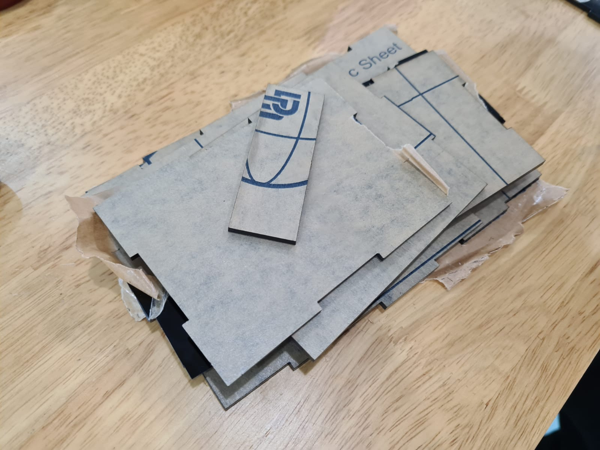

For the final module project, I have decide to make The Most Useless Machine Ever. I came across this idea while watching Youtube. However, to make it a little more challenging, I will be implementing a lcd I2c screen to display messages.
Planning
I drew out a couple of pages worth of ideas that I had for this project. Coming from a DnT background, it was nice to be able to this once again.
Materials/Electronics needed:
Toggle switch
Mini backboard
Battery case
4 AAA batteries
Mounting tape
It turns out that most of the electronics that I need for my project has already been included in the arduino package that I received. As of right now, im not too sure whether I will be using the battery pack. I might try to find a dc power supply or maybe even connect the arduino via my laptop to power it up.
Prototyping
I decided to build a prototype from used cardboard boxes. It was actually a fantastic idea because I was able to get my dimensions right finalise them using this prototype. I managed to create the box and a few arms for the servo by planning them out on a piece of paper.
Arduino Uno
I tried building the cicuit and trying it out while doing the prototype. It turned out ok. However, I had a couple problem especially on the arduino codes. I had a hard time figuring out and putting together the codes due to my lack of coding experience. But I managed to do it thankfully after asking my lectures and watching tutorials.
I also had to learn how to solder which was an insteresting experience for me. My dad and I are into rc stuff from drones to planes to even drift cars. So we had a mini soldering iron at home. After a couple of tries, I actually managed to solder the wires for my switch together.
3d Printing
This is probably my favourite part of this project. I was very excited and couldnt wait to get my hands on the 3d printer. I ended up printing quite a number of parts. I used Fusion360 to make the 3d models before slicing them in cura.
Laser cutting
So the main body was to be made via laser cutting. I designed the parts in fusion360 before sketching them in Autocad. I did so to ensure that the parts were going to fit each other perfectly.

Assembling
To assemble the box, I made use of hot glue. The proper method is by clorofoam however I was not able to get my hands on them so I got the next best method, hot glue. It was very tedius and I even managed to drip hot glue on my pants which was terrifiying.